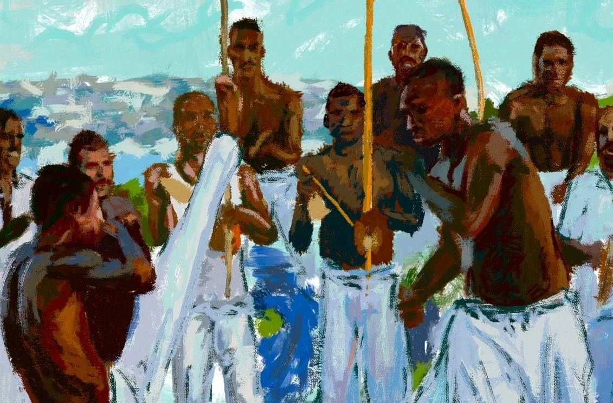

Frentes Negras do Vale
Sobre o projeto
O Frentes Negras do Vale é um projeto dedicado à valorização, ao registro e à divulgação da história, da memória e da cultura negra em Itajaí e no Vale do Itajaí. Por meio deste espaço, buscamos reunir informações, documentos, registros e histórias que contribuam para reconhecer a presença e a participação da população negra na formação histórica e cultural da região.

Nossa proposta
O projeto busca reunir diferentes registros sobre a trajetória da população negra, apresentando personagens, acontecimentos, manifestações culturais, lugares de memória, documentos e outras fontes históricas. A proposta é construir um espaço de consulta e compartilhamento de informações, aproximando o público de histórias e experiências que fazem parte da formação da região.
Por que este projeto existe?
A história da população negra nem sempre recebeu o reconhecimento e o espaço que merece nas narrativas sobre a formação de Santa Catarina e do Vale do Itajaí. Muitas trajetórias, formas de organização, experiências e contribuições permanecem pouco conhecidas ou aparecem de maneira secundária nos registros históricos e nos espaços de memória.
Diante disso, o Frentes Negras do Vale pretende contribuir para ampliar essa discussão, dando visibilidade à presença negra e valorizando suas diferentes formas de participação na história regional. Mais do que reunir informações, o projeto busca questionar silenciamentos e contribuir para a construção de uma memória histórica mais diversa.
Pesquisa e construção do acervo
O conteúdo disponibilizado no site é reunido a partir de diferentes fontes, como documentos históricos, pesquisas acadêmicas, livros, fotografias, registros institucionais e outras referências. O acervo está em construção e poderá ser ampliado conforme novas fontes, informações e registros forem identificados.
Colabore com o projeto
A construção da memória também depende da participação da comunidade. Fotografias antigas, documentos, relatos, histórias familiares e informações sobre pessoas, acontecimentos e espaços relacionados à história e à cultura negra podem contribuir para ampliar este acervo.
Se você possui algum registro ou informação que possa colaborar com o projeto, entre em contato conosco.